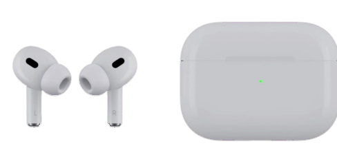

<!doctype html>
<!-- Modified evaluation version, 2026-11-01. GPL-3.0-or-later. See ../airpods-desktop/LICENSE. -->
<html lang="zh-CN">
<meta charset="utf-8"><meta name="viewport" content="width=device-width,initial-scale=1">
<title>AirPods · Windows 11 评估效果稿</title>
<style>
:root{font-family:Inter,"Segoe UI","Microsoft YaHei",sans-serif;color-scheme:dark;--surface:#232428;--ink:#f5f5f7;--muted:#b5b5bd;--line:#ffffff16}
*{box-sizing:border-box}body{margin:0;min-height:100vh;background:#111216;color:var(--ink)}main{display:grid;grid-template-columns:minmax(310px,420px) 1fr;min-height:100vh}aside{padding:52px 38px;border-right:1px solid var(--line);background:#17181c}small{color:#8f9ba9;font-size:11px;letter-spacing:2px}h1{font-size:32px;letter-spacing:-1px;margin:20px 0 14px;font-weight:600}p{color:var(--muted);line-height:1.8;font-size:13px}label{display:block;font-size:12px;margin:28px 0 10px;color:var(--muted)}input,select,button{font:inherit;border-radius:10px;border:1px solid #ffffff22;background:#ffffff08;color:inherit;padding:12px;width:100%;font-size:13px}select option{background:#25262c}button{cursor:pointer}button:hover{background:#ffffff16}button:focus-visible,input:focus-visible,select:focus-visible{outline:2px solid #8ec8ff;outline-offset:3px}.actions{display:flex;gap:10px;margin-top:16px}.note{font-size:12px;border-top:1px solid var(--line);padding-top:22px;margin-top:30px}.desktop{position:relative;display:grid;place-items:center;min-height:660px;overflow:hidden;background:radial-gradient(ellipse at 60% 63%,#25466c 0,transparent 52%),radial-gradient(ellipse at 85% 15%,#2e2d5a 0,transparent 53%),#111722}.desktop:before{content:"";position:absolute;width:450px;height:450px;border:70px solid #6ba5eb11;border-radius:42%;transform:rotate(-35deg)}.badge{position:absolute;top:32px;left:32px;font-size:11px;color:#c8d1e0;border:1px solid #ffffff22;padding:8px 12px;border-radius:30px;letter-spacing:1px}.taskbar{position:absolute;bottom:0;height:48px;background:#18202be6;backdrop-filter:blur(20px);width:100%;border-top:1px solid #ffffff12;display:flex;align-items:center;justify-content:center;gap:16px;color:#a7b5ca;font-size:13px}.start{display:grid;grid-template-columns:repeat(2,8px);gap:2px}.start i{background:#70b7f9;width:8px;height:8px}.popup{z-index:1;position:relative;width:320px;height:340px;background:var(--surface);border-radius:32px;box-shadow:0 25px 80px #0006,0 0 0 1px #ffffff15;text-align:center;animation:arrive .5s cubic-bezier(.2,.8,.2,1);color:var(--ink)}.close{position:absolute;right:14px;top:13px;width:25px;height:25px;padding:0;border:0;border-radius:50%;color:var(--muted);font-size:18px;background:#ffffff0e}.title{position:absolute;top:39px;left:14px;right:14px;margin:0;font-size:21px;font-weight:600;white-space:nowrap;overflow:hidden;text-overflow:ellipsis}.status{position:absolute;top:78px;width:100%;font-size:12px;color:var(--muted)}.status b{display:inline-block;width:6px;height:6px;border-radius:50%;background:#6ed895;margin-right:7px}.device{position:absolute;top:103px;left:38px;width:244px;height:122px;object-fit:contain}.columns{position:absolute;top:230px;left:22px;right:22px;display:grid;grid-template-columns:repeat(3,1fr);gap:6px}.caption{color:var(--muted);font-size:11px;margin-bottom:14px}.reading{font-size:15px;display:flex;align-items:center;justify-content:center;gap:7px}.battery{width:24px;height:12px;border:1.5px solid #8d929b;border-radius:3px;position:relative;padding:1px}.battery:after{content:"";position:absolute;width:2px;height:5px;right:-4px;top:2px;background:#8d929b;border-radius:1px}.fill{display:block;height:100%;border-radius:1px;background:#6ed895}.hint{position:absolute;top:300px;width:100%;font-size:10px;color:var(--muted)}.reopen{z-index:1;width:auto;padding:12px 24px}[hidden]{display:none!important}.light{--surface:#f7f7f9;--ink:#202124;--muted:#656973}.light .close{background:#00000009}.muted-dot b{background:#858d9b}.low .fill{background:#f17769}@keyframes arrive{from{opacity:0;transform:translateY(35px)}to{opacity:1;transform:translateY(0)}}@media(max-width:800px){main{grid-template-columns:1fr}aside{padding:28px}.desktop{min-height:540px}.badge{top:20px;left:20px}}
</style>
<main><aside><small>WINDOWS 11 / AIRPODS</small><h1>连接时，<br>一眼看见。</h1><p>设备名称、连接状态和三路电量。基于 AirPodsDesktop 改进的弹窗评估效果稿。</p>
<label for="name">设备名称预览</label><input id="name" value="Kevin 的 AirPods Pro" maxlength="100">
<label for="scenario">切换状态</label><select id="scenario"><option value="ready">已连接 · 收到电量</option><option value="waiting">已连接 · 等待电量广播</option><option value="disconnected">蓝牙已断开</option><option value="partial">充电盒电量不可用</option><option value="low">左耳低电量 · 充电中</option><option value="scanner">已连接 · 扫描器不可用</option></select>
<div class="actions"><button id="theme">切换浅色</button><button id="show">重播弹窗</button></div>
<p class="note">本页完全离线，所有名称与电量均为模拟数据，不访问蓝牙，不安装程序。它用于评估信息布局；原生版保留上游设备动画、托盘和系统主题支持。Windows 连接状态不等于正在播放音频。</p><p>“—”代表没有数据，不能当成 0%。电量广播不可用时，连接状态仍由 Windows 单独确认。</p></aside>
<section class="desktop" aria-label="桌面效果预览"><span class="badge">交互效果稿 · 模拟数据</span><div class="popup" id="popup" role="region" aria-label="AirPods 状态卡片"><button class="close" id="close" aria-label="关闭弹窗">×</button><h2 class="title" id="title"></h2><div class="status" id="status" aria-live="polite"></div><div class="columns" id="columns"></div><div class="hint">电量为估算值；— 表示暂无数据</div></div><button class="reopen" id="reopen" hidden>显示弹窗</button><div class="taskbar"><span class="start"><i></i><i></i><i></i><i></i></span><span>⌕</span><span>▱</span><span>◉</span></div></section></main>
<script>
const $=id=>document.getElementById(id);
const states={ready:['已连接 · 已收到电量',[80,60,40]],waiting:['已连接 · 等待电量广播',[null,null,null]],disconnected:['已断开连接',[null,null,null]],partial:['已连接 · 已收到电量',[80,60,null]],low:['已连接 · 已收到电量',[10,60,40]],scanner:['已连接 · 电量扫描不可用',[null,null,null]]};
function render(){const key=$('scenario').value;const [status,values]=states[key];$('title').textContent=$('name').value||'AirPods';$('title').title=$('name').value;$('status').replaceChildren();const dot=document.createElement('b');$('status').append(dot,document.createTextNode(status));$('status').classList.toggle('muted-dot',key==='disconnected');$('columns').replaceChildren();values.forEach((value,i)=>{const c=document.createElement('div');const label=document.createElement('div');label.className='caption';label.textContent=['左耳','右耳','充电盒'][i];const reading=document.createElement('div');reading.className='reading'+(value!==null&&value<=20?' low':'');if(value!==null){const battery=document.createElement('span');battery.className='battery';const fill=document.createElement('span');fill.className='fill';fill.style.width=value+'%';battery.append(fill);reading.append(battery);}const text=document.createElement('span');text.textContent=value===null?'—':value+'%'+(key==='low'&&i===0?' ⚡':'');reading.append(text);c.append(label,reading);$('columns').append(c);});}
function show(){const p=$('popup');p.hidden=false;$('reopen').hidden=true;p.style.animation='none';void p.offsetWidth;p.style.animation='';}
function hide(){$('popup').hidden=true;$('reopen').hidden=false;}
$('scenario').addEventListener('change',()=>{render();show();});$('name').addEventListener('input',render);$('theme').onclick=()=>{const light=$('popup').classList.toggle('light');$('theme').textContent=light?'切换深色':'切换浅色';};$('show').onclick=show;$('reopen').onclick=show;$('close').onclick=hide;document.addEventListener('keydown',e=>{if(e.key==='Escape')hide();});render();
</script>
</html>
